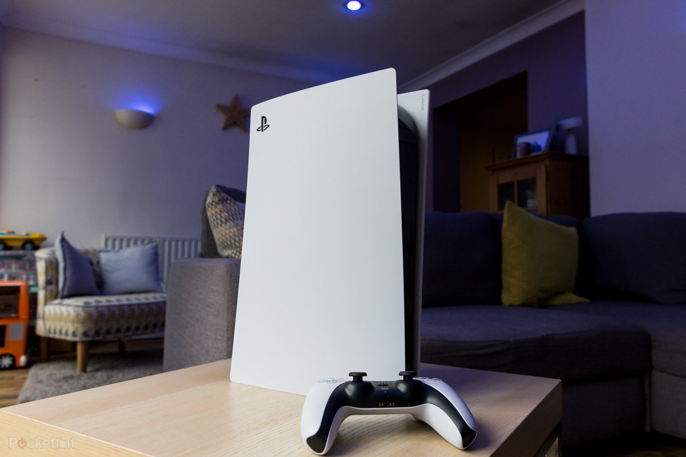

主機遊戲市場：索尼
索尼於 1946 年成立，起出以電視、隨身聽等消費性電子產品起家。在 1988 年宣佈與任天堂共同開發遊戲主機。但在 1992 年 5月合作破局，本來打算退出遊戲市場的索尼，在久多良木健的堅持下，全力開發新一代遊戲機。 1994 年 12 月 3 日，正式推出了第一款遊戲機—PlayStation。2000 年 3 月 4 日，推出 PlayStation 2 （ PS2 ）。 2004 年 12 月 12日，推出第一款手提遊戲機－PlayStationPortable（PSP）。值得一提的是，當任天堂和SEGA 致力於開發自家遊戲，索尼則是開放許多第三方遊戲自製商製作 PS2的遊戲，這樣的包容性，使得當時 PS2 的遊戲非常多元，吸引許多消費者，PS2是目前史上銷量最高的遊戲機台，數量高達 1.58 億台，不過這個記錄可能在未來被任天堂的Switch給打破，但是仍無法撼動 PS2在遊戲主機歷史上的地位，說是PS2讓遊戲主機市場有今天的熱度也不為過。 直至今日，PlayStation已經出到第五代，雖然因為供應鍊缺料、市場策略的不同，銷量相比 Switch落後許多。但是主打高效能高畫質的 PS5仍有許多忠實玩家，目前也是全球第二銷量的主機，僅落後Switch。目前，索尼的業務劃分，遊戲及網路服務業也是公司營收與獲利最好的業務類別。